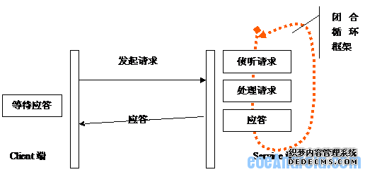
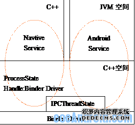

Android Service 代码实例
1、Service本质结构
我们还是从Service的根本意义分析入手，服务的本质就是响应客户端请求。要提供服务，就必须建立接收请求，处理请求，应答客服端的框架。我想在Android Service设计者也会无时不刻把这个服务本质框图挂在脑海中。从程序的角度，服务一定要存在一个闭合循环框架和请求处理框架。

分析清楚服务框就必须弄清楚以下的机制及其构成。
(1)闭合循环结构放置在哪里？
(2)处理请求是如何分发和管理？
(3)处理框架是如何建立的？
(4)概念框架是如何建立的？
2、Service基本框架分析
Android设计中，Native Service和Android Service采用了同一个闭合循环框架。这个闭合循环框架放置在Native的C++空间中。

在服务框架中，ProcessState是公用的部分，这个公用部分最主要的框架就是闭合循环框架和接收到从Binder来的请求后的处理框架。我们将服务框架用ProcessSate来表示，简言之：
(1) addservice
(2) 建立闭合循环处理框架。
java代码：
int main(int argc,char** argv){ sp<ProcessState> proc(ProcessState::self())??
addService(String16("xxx0"), new xxx0Service())??
addService(String16("xxx1"), new xxx1Service())??
ProcessState::self()->startThreadPool()??
IPCThreadState::self()->joinThreadPool()??//?????????
}
2.1、Native Service
Native Service是在系统Init阶段通过Init。rc脚本建立的服务。
int main(int argc,char** argv){ sp<ProcessState> proc(ProcessState::self())??
sp<IServiceManager> sm = defaultServiceManager()??
LOGI("ServiceManager?? %p",sm??get())??
AudioFlinger::instantiate()??
MediaPlayerService::instantiate()??
CameraService::instantiate()??
AudioPolicyService::instantiate()??
ProcessState::self()->startThreadPool()??
IPCThreadState::self()->joinThreadPool()??
}
(1)服务进程建立了ProcessState对象，并将给对象登记在进程的上下文中。
(2)建立一个新AudioFlinger对象，并将对象登记Service Manager Service中。
(3)开始就收请求，处理请求，应答这个循环闭合框架。
2.2、Android Service
Androids service是系统二阶段(Init2)初始化时建立的服务。
在SystemServer.java中看不到循环结构，只是可以看到建立了init2的实现函数，建立了一大堆服务，并AddService到service Manager。
Init1()是在Native空间实现的(com_andoird_server_systemServer.cpp)。我们一看这个函数就知道了，原来这个闭合循环处理框架在这里：
init1->system_init() @System_init.cpp
在system_init()我们看到了这个久违的循环闭合管理框架。
{ Call "com/android/server/SystemServer","init2
ProcessState::self()->startThreadPool()??
IPCThreadState::self()->joinThreadPool()??
}